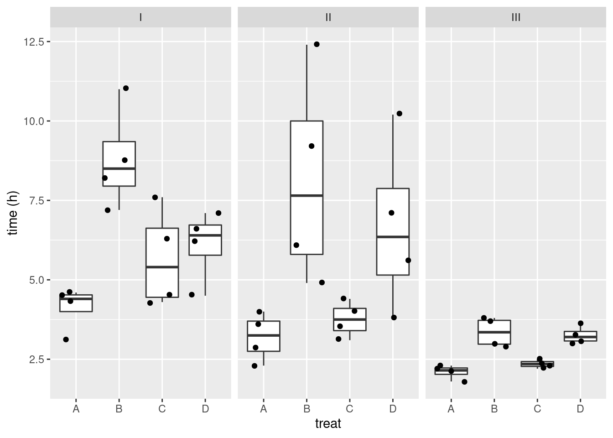
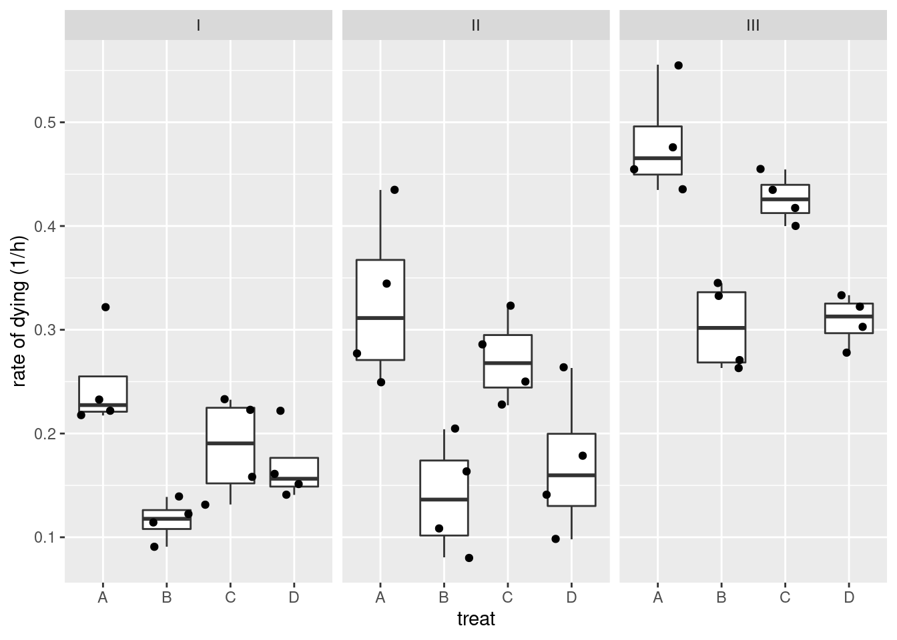

10. Recap: Algemeen Lineair Model - Interacties - Diagnostiek - Contrasten - Dactoriële proeven
Lieven Clement
statOmics, Ghent University (https://statomics.github.io)
1 Model met interacties
Effect modificatie!
Associatie van een predictor en de respons variabele hangt van de waarde van een andere predictor.
1.1 Interactie tussen continue predictor variabele en een categorische predictor?
Om deze interactie of effectmodificatie tussen variabelen \(X_v\) en \(X_s\), en \(X_w\) en \(X_s\) statistisch te modelleren, kan men de producten van beide variabelen in kwestie aan het model toevoegen
\[ Y_i = \beta_0 + \beta_v x_{iv} + \beta_w x_{iw} +\beta_s x_{is} + \beta_{vs} x_{iv}x_{is} + \beta_{ws} x_{iw}x_{is} +\epsilon_i \]
Deze termen kwantificeren de interactie-effecten van respectievelijk de predictoren \(x_v\) en \(x_s\), en, \(x_v\) en \(x_s\) op de gemiddelde uitkomst.
In dit model worden de termen \(\beta_vx_{iv}\), \(\beta_wx_{iw}\) en \(\beta_s x_{is}\) de hoofdeffecten van de predictoren \(x_v\), \(x_w\) en \(x_s\) genoemd.
lmVWS_IntVS_WS <- lm(
lpsa ~
lcavol +
lweight +
svi +
svi:lcavol +
svi:lweight,
data = prostate)
summary(lmVWS_IntVS_WS)##
## Call:
## lm(formula = lpsa ~ lcavol + lweight + svi + svi:lcavol + svi:lweight,
## data = prostate)
##
## Residuals:
## Min 1Q Median 3Q Max
## -1.50902 -0.44807 0.06455 0.45657 1.54354
##
## Coefficients:
## Estimate Std. Error t value Pr(>|t|)
## (Intercept) -0.52642 0.56793 -0.927 0.356422
## lcavol 0.54060 0.07821 6.912 6.38e-10 ***
## lweight 0.58292 0.15699 3.713 0.000353 ***
## sviinvasion 3.43653 1.93954 1.772 0.079771 .
## lcavol:sviinvasion 0.13467 0.25550 0.527 0.599410
## lweight:sviinvasion -0.82740 0.52224 -1.584 0.116592
## ---
## Signif. codes: 0 '***' 0.001 '**' 0.01 '*' 0.05 '.' 0.1 ' ' 1
##
## Residual standard error: 0.7147 on 91 degrees of freedom
## Multiple R-squared: 0.6367, Adjusted R-squared: 0.6167
## F-statistic: 31.89 on 5 and 91 DF, p-value: < 2.2e-16Omdat \(X_S\) een dummy variabele is, verkrijgen we verschillende regressievlakken:
Model voor \(X_s=0\): \[Y=\beta_0+\beta_vX_v+\beta_wX_w + \epsilon\] waar de hoofdeffecten de hellingen voor lcavol en lweight zijn
en het model voor \(X_s=1\): \[\begin{array}{lcl} Y&=&\beta_0+\beta_vX_v+\beta_s+\beta_wX_w+\beta_{vs}X_v + \beta_{ws}X_w +\epsilon\\ &=& (\beta_0+\beta_s)+(\beta_v+\beta_{vs})X_v+(\beta_w+\beta_{ws})X_w+\epsilon \end{array}\] met intercept \(\beta_0+\beta_s\) en hellingen \(\beta_v+\beta_{vs}\) en \(\beta_w+\beta_{ws}\)
- De helling voor lcavol en lweight hangt af van de status van de zaadblaasjes!
## Warning: no DISPLAY variable so Tk is not available1.2 Interactie tussen continue predictoren?
\[ Y_i = \beta_0 + \beta_v x_{iv} + \beta_w x_{iw} +\beta_s x_{is} + \beta_{vw} x_{iv}x_{iw} +\epsilon_i \]
Deze term kwantificeert het interactie-effect van de predictoren \(x_v\) en \(x_w\) op de gemiddelde uitkomst.
Het effect van een verschil in 1 eenheid in \(X_v\) op de gemiddelde uitkomst bedraagt nu:
\[ \begin{array}{l} E(Y | X_v=x_v +1, X_w=x_w, X_s=x_s) - E(Y | X_v=x_v, X_w=x_w, X_s=x_s) \\ \quad = \left[\beta_0 + \beta_v (x_{v}+1) + \beta_w x_w +\beta_s x_{s} + \beta_{vw} (x_{v}+1) x_w \right] - \left[\beta_0 + \beta_v x_{v} + \beta_w x_w + \beta_s x_{s} + \beta_{vw} (x_{v}) x_w \right]\\ \quad = \beta_v + \beta_{vw} x_w \end{array} \]
De helling voor lcavol hangt m.a.w. af van het log gewicht van de prostaat!
We kunnen hetzelfde doen voor lweight. Helling voor lweight hangt af van het log volume van de tumor!
lmVWS_IntVW <- lm(
lpsa ~ lcavol +
lweight +
svi +
lcavol:lweight,
prostate)
summary(lmVWS_IntVW)##
## Call:
## lm(formula = lpsa ~ lcavol + lweight + svi + lcavol:lweight,
## data = prostate)
##
## Residuals:
## Min 1Q Median 3Q Max
## -1.65886 -0.44673 0.02082 0.50244 1.57457
##
## Coefficients:
## Estimate Std. Error t value Pr(>|t|)
## (Intercept) -0.6430 0.7030 -0.915 0.36278
## lcavol 1.0046 0.5427 1.851 0.06734 .
## lweight 0.6146 0.1961 3.134 0.00232 **
## sviinvasion 0.6859 0.2114 3.244 0.00164 **
## lcavol:lweight -0.1246 0.1478 -0.843 0.40156
## ---
## Signif. codes: 0 '***' 0.001 '**' 0.01 '*' 0.05 '.' 0.1 ' ' 1
##
## Residual standard error: 0.7179 on 92 degrees of freedom
## Multiple R-squared: 0.6293, Adjusted R-squared: 0.6132
## F-statistic: 39.05 on 4 and 92 DF, p-value: < 2.2e-162 Anova tabel en aanvullende kwadratensommen?
Beschouw de volgende twee geneste regressiemodellen voor predictoren \(x_1, \ldots, x_{p-k}\) en \(x_1, \ldots, x_{p-1}\): \[ Y_i = \beta_0+\beta_1 x_{i1} + ... + \beta_{p-k} x_{ip-k} + \epsilon_i, \] met \(\epsilon_i\text{ iid } N(0,\sigma_1^{2})\), en \[ Y_i = \beta_0+\beta_1 x_{i1} + ... + \beta_{p-1} x_{ip-1} + \epsilon_i, \] met \(\epsilon_i\text{ iid } N(0,\sigma_2^{2})\).
Voor het eerste (gereduceerde) model geldt de decompositie \[ \text{SSTot} = \text{SSR}_1 + \text{SSE}_1 \] en voor het tweede (niet-gereduceerde) model \[ \text{SSTot} = \text{SSR}_2 + \text{SSE}_2 \] (SSTot is uiteraard dezelfde in beide modellen omdat dit niet afhangt van het regressiemodel).
\[ \text{SSTot} = \text{SSR}_{2 \mid 1} + \text{SSR}_1 + \text{SSE}_2 \]
\[ F = \frac{\text{SSR}_{2 \mid 1}}{\text{SSE}_2} \]
- Testen voor alle niveaus van een factor simultaan: omnibus test.
- Testen voor totale effect van een predictor: hoofdeffecten + interacties
- …
3 Diagnostiek
3.1 Multicollineariteit
\[\textrm{VIF}_j=\left(1-R_j^2\right)^{-1}\]
3.1.1 Body fat voorbeeld

##
## Call:
## lm(formula = Body_fat ~ Triceps + Thigh + Midarm, data = bodyfat)
##
## Residuals:
## Min 1Q Median 3Q Max
## -3.7263 -1.6111 0.3923 1.4656 4.1277
##
## Coefficients:
## Estimate Std. Error t value Pr(>|t|)
## (Intercept) 117.085 99.782 1.173 0.258
## Triceps 4.334 3.016 1.437 0.170
## Thigh -2.857 2.582 -1.106 0.285
## Midarm -2.186 1.595 -1.370 0.190
##
## Residual standard error: 2.48 on 16 degrees of freedom
## Multiple R-squared: 0.8014, Adjusted R-squared: 0.7641
## F-statistic: 21.52 on 3 and 16 DF, p-value: 7.343e-06vif(lmFat)## Triceps Thigh Midarm
## 708.8429 564.3434 104.6060##
## Call:
## lm(formula = Midarm ~ Triceps + Thigh, data = bodyfat)
##
## Residuals:
## Min 1Q Median 3Q Max
## -0.58200 -0.30625 0.02592 0.29526 0.56102
##
## Coefficients:
## Estimate Std. Error t value Pr(>|t|)
## (Intercept) 62.33083 1.23934 50.29 <2e-16 ***
## Triceps 1.88089 0.04498 41.82 <2e-16 ***
## Thigh -1.60850 0.04316 -37.26 <2e-16 ***
## ---
## Signif. codes: 0 '***' 0.001 '**' 0.01 '*' 0.05 '.' 0.1 ' ' 1
##
## Residual standard error: 0.377 on 17 degrees of freedom
## Multiple R-squared: 0.9904, Adjusted R-squared: 0.9893
## F-statistic: 880.7 on 2 and 17 DF, p-value: < 2.2e-163.2 Invloedrijke Observaties
3.2.1 Exploratief
- Studentized residu’s om outliers op te sporen
- leverage (invloed, hefboom) om observaties met extreem covariaatpatroon op te sporen. Extreme leverage: leverage waarde groter dan 2p/n
plot(lmVWS,5)3.2.2 Cooks distance
\[D_i=\frac{\sum_{j=1}^n(\hat{Y}_j-\hat{Y}_{j(i)})^2}{p\textrm{MSE}}\]
- Extreme Cook’s distance als het het 50% percentiel van de \(F_{p,n-p}\)-verdeling overschrijdt.
plot(lmVWS,4)3.2.3 DFBETAS
\[\textrm{DFBETAS}_{j(i)}=\frac{\hat{\beta}_{j}-\hat{\beta}_{j(i)}}{\textrm{SD}(\hat{\beta}_{j})}\] - DFBETAS extreem is wanneer ze 1 overschrijdt in kleine tot middelgrote datasets en \(2/\sqrt{n}\) in grote datasets

4 Contrasten
4.1 Bloeddruk voorbeeld
library(NHANES)
bpData <- NHANES %>%
filter(
Race1 =="White" &
Age >= 18 &
!is.na(BPSysAve)
)
mBp1 <- lm(BPSysAve ~ Age*Gender, bpData)
par(mfrow = c(2,2))
plot(mBp1)4.1.1 Remediering heteroscedasticiteit
Illustratie: Bij grote steekproeven kunnen we corrigeren voor heteroscedasticiteit.
mSd <- lm(mBp1$res %>% abs ~ mBp1$fitted)We schatten het model nu opnieuw:
mBp3 <- lm(BPSysAve ~ Age*Gender, bpData, w = 1/mSd$fitted^2)4.1.2 Besluitvorming
De onderzoeksvragen vertalen zich in de volgende nullhypotheses:
Associatie tussen bloeddruk en leeftijd bij de vrouwen? \[H_0: \beta_\text{Age} = 0 \text{ vs } H_1: \beta_\text{Age} \neq 0 \]
Associatie tussen bloeddruk en leeftijd bij de mannen? \[H_0: \beta_\text{Age} + \beta_\text{Age:Gendermale} = 0 \text{ vs } H_1: \beta_\text{Age} + \beta_\text{Age:Gendermale} \neq 0 \]
Is de Associatie tussen bloeddruk en leeftijd verschillend bij mannen en vrouwen? \[H_0: \beta_\text{Age:Gendermale} = 0 \text{ vs } H_1: \beta_\text{Age:Gendermale} \neq 0 \]
We kunnen onderzoeksvraag 1 en 3 onmiddelijk toetsen o.b.v. de model output.
Onderzoeksvraag 2 is echter een lineaire combinatie van twee parameters.
\[ \begin{array}{lcl} L \boldsymbol{\beta} &=& 0\\\\ \left[\begin{array}{cccc} 0 &0& 1& 1\end{array} \right]\left[\begin{array}{c}\beta_0\\ \beta_g\\ \beta_a\\ \beta_{a:g}\end{array} \right] &=& 0\\\\ 0\beta_0 + 0 \beta_g + 1 \beta_a + 1\beta_{a:g} &=& 0\\\\ \beta_a + \beta_{a:g} &=&0 \end{array} \]
- Bovendien is er ook het probleem dat we meerdere toetsen nodig hebben om de associaties te bestuderen.
- We toetsen eerste de omnibus hypothese dat er geen associatie is tussen leeftijd en de bloeddruk.
\[ H_0: \beta_\text{Age} = \beta_\text{Age} + \beta_\text{Age:Gendermale} = \beta_\text{Age:Gendermale} = 0 \]
Dat vereenvoudigt zich tot het toetsen dat \[ H_0: \beta_\text{Age} = \beta_\text{Age:Gendermale} = 0 \]
Wat we kunnen evalueren door twee modellen te vergelijken. Een model met enkel het gender effect en volledige model met Gender, Age en Gender x Age interactie.
- Als we deze hypothese kunnen verwerpen voeren we posthoc analyses uit voor elk van de 3 contrasten.
mBp0 <- lm(BPSysAve ~ Gender, bpData, w = 1/mSd$fitted^2)
anova(mBp0, mBp3)De posthoc testen kunnen we opnieuw uitvoeren a.d.h.v. het multcomp pakket.
bpPosthoc <- glht(mBp3, linfct=c(
"Age = 0",
"Age + Age:Gendermale = 0",
"Age:Gendermale = 0")
)
bpPosthoc %>% summary##
## Simultaneous Tests for General Linear Hypotheses
##
## Fit: lm(formula = BPSysAve ~ Age * Gender, data = bpData, weights = 1/mSd$fitted^2)
##
## Linear Hypotheses:
## Estimate Std. Error t value Pr(>|t|)
## Age == 0 0.43999 0.01511 29.127 <1e-10 ***
## Age + Age:Gendermale == 0 0.24840 0.01879 13.217 <1e-10 ***
## Age:Gendermale == 0 -0.19159 0.02411 -7.946 <1e-10 ***
## ---
## Signif. codes: 0 '***' 0.001 '**' 0.01 '*' 0.05 '.' 0.1 ' ' 1
## (Adjusted p values reported -- single-step method)bpPosthocBI <- bpPosthoc %>% confint
bpPosthocBI##
## Simultaneous Confidence Intervals
##
## Fit: lm(formula = BPSysAve ~ Age * Gender, data = bpData, weights = 1/mSd$fitted^2)
##
## Quantile = 2.3169
## 95% family-wise confidence level
##
##
## Linear Hypotheses:
## Estimate lwr upr
## Age == 0 0.4400 0.4050 0.4750
## Age + Age:Gendermale == 0 0.2484 0.2049 0.2919
## Age:Gendermale == 0 -0.1916 -0.2475 -0.13574.1.3 Conclusie
We kunnen besluiten dat er een extreem significante associatie is tussen leeftijd en de bloeddruk (p << 0.001). De bloeddruk bij twee vrouwen die in leeftijd verschillen is gemiddeld 0.44 mm Hg hoger per jaar leeftijdsverschil bij de oudste vrouw en dat verschil is extreem significant (p << 0.001, 95% BI [0.4, 0.47]). De bloeddruk bij mannen die in leeftijd verschillen is gemiddeld 0.25 mm Hg hoger per jaar leeftijdsverschil bij de oudere man. (p << 0.001, 95% BI [0.2, 0.29]). Het gemiddelde bloeddrukverschil tussen personen in leeftijd verschillen is gemiddeld 0.19 mm Hg/jaar lager bij mannen dan vrouwen (p << 0.001, 95% BI [-0.25, -0.14]).
4.2 Marginale effecten
Wat doen we als interacties niet significant zijn?
- Conventionele aanpak: interacties uit model halen
- Daarna schatten we de hoofdeffecten met vereenvoudigd model
Merk op dat
- We bij complexe modellen veel testen uitvoeren om tot het vereenvoudigd model te komen.
- Het aanvaarden van de nulhypotheses een zwakke conclusie is en dat er typisch weinig power is om een interactie op te pikken. Het is dus mogelijk dat het model zonder interacties toch het foutieve model is.
- Bij high troughput experimenten gaan we typisch inferentie doen voor alle genen/proteinen die we meten (vb. 40000 genen of 1000den proteïnen). Door grote correctie voor multiple testing kunnen we interactie termen niet weglaten want daar weten we zeker dat de power om interacties op te pikken zeer laag.
Omwille van deze redenen kunnen we ook de interacties in het model laten en inferentie doen over de marginale effecten.
De effecten waarbij we uitmiddelen over alle predictorwaarden van de andere predictoren.
In een gerandomiseerde observationele studie zullen we zo dus de assocatie schatten voor de gemiddelde patiënt in de populatie.
Zie oefeningen: vissen en kpna2
4.2.1 Testosteron concentratie bij volwassen mannen in de NHANES studie
Veronderstel dat we wensen te bestuderen of er een associatie is leeftijd en gewicht van volwassen mannen in de Amerikaanse populatie op de de testosteron concentratie.
modTes <- lm(formula = Testosterone ~ Age * Weight, data = NHANES %>%
filter(Age > 18 & Gender == "male" & !is.na(Testosterone) &!is.na(Weight) & !is.na(Age)))
plot(modTes)summary(modTes)##
## Call:
## lm(formula = Testosterone ~ Age * Weight, data = NHANES %>% filter(Age >
## 18 & Gender == "male" & !is.na(Testosterone) & !is.na(Weight) &
## !is.na(Age)))
##
## Residuals:
## Min 1Q Median 3Q Max
## -443.32 -117.40 -14.48 92.81 1454.01
##
## Coefficients:
## Estimate Std. Error t value Pr(>|t|)
## (Intercept) 733.876732 54.785206 13.396 < 2e-16 ***
## Age -1.272290 1.160246 -1.097 0.273
## Weight -3.143425 0.629743 -4.992 6.6e-07 ***
## Age:Weight 0.003199 0.013342 0.240 0.811
## ---
## Signif. codes: 0 '***' 0.001 '**' 0.01 '*' 0.05 '.' 0.1 ' ' 1
##
## Residual standard error: 167.4 on 1699 degrees of freedom
## Multiple R-squared: 0.1158, Adjusted R-squared: 0.1143
## F-statistic: 74.19 on 3 and 1699 DF, p-value: < 2.2e-16Er is geen significante interactie. Het aanvaarden van de nulhypothese is een zwakke conclusie. Daarom kunnen we opteren om de interactie in het model te laten.
Merk op dat de hoofdeffecten geen zinvolle interpretatie hebben!
Omdat er geen significante interactie is, is het zinvol om een uitspraak te doen over de associatie van gewicht en testosteron, en leeftijd en testosteron.
We kunnen hierover een uitspraak doen door te marginaliseren over alle leeftijden (gewichten) van de mannen in het experiment.
\[ \frac{\sum\limits_{i=1}^n (\beta_a + \beta_{w:a} X_{w})}{n}= \beta_a +\beta_{w:a} \bar{X}_w \]
\[ \frac{\sum\limits_{i=1}^n (\beta_w + \beta_{w:a} X_{a})}{n}= \beta_w +\beta_{w:a} \bar{X}_a \]
NHANES %>%
filter(Age > 18 & Gender == "male" & !is.na(Testosterone) &!is.na(Weight) & !is.na(Age)) %>%
pull(Weight) %>%
mean %>%
round(.,1)## [1] 88.9NHANES %>%
filter(Age > 18 & Gender == "male" & !is.na(Testosterone) &!is.na(Weight) & !is.na(Age)) %>%
pull(Age) %>%
mean %>%
round(.,1)## [1] 46.4We evalueren nu het contrast voor de marginale effecten:
marginalEffects <- glht(
modTes,
linfct = c(
"Age +88.9*Age:Weight= 0",
"Weight +46.4*Age:Weight= 0"
)
)
summary(marginalEffects)##
## Simultaneous Tests for General Linear Hypotheses
##
## Fit: lm(formula = Testosterone ~ Age * Weight, data = NHANES %>% filter(Age >
## 18 & Gender == "male" & !is.na(Testosterone) & !is.na(Weight) &
## !is.na(Age)))
##
## Linear Hypotheses:
## Estimate Std. Error t value Pr(>|t|)
## Age + 88.9 * Age:Weight == 0 -0.9879 0.2487 -3.973 0.000148 ***
## Weight + 46.4 * Age:Weight == 0 -2.9950 0.2131 -14.055 < 1e-10 ***
## ---
## Signif. codes: 0 '***' 0.001 '**' 0.01 '*' 0.05 '.' 0.1 ' ' 1
## (Adjusted p values reported -- single-step method)confint(marginalEffects)##
## Simultaneous Confidence Intervals
##
## Fit: lm(formula = Testosterone ~ Age * Weight, data = NHANES %>% filter(Age >
## 18 & Gender == "male" & !is.na(Testosterone) & !is.na(Weight) &
## !is.na(Age)))
##
## Quantile = 2.2383
## 95% family-wise confidence level
##
##
## Linear Hypotheses:
## Estimate lwr upr
## Age + 88.9 * Age:Weight == 0 -0.9879 -1.5446 -0.4313
## Weight + 46.4 * Age:Weight == 0 -2.9950 -3.4720 -2.5180Dit heeft een interpretatie van het gemiddelde leeftijds- en de gemiddelde gewichtsassociatie in de populatie.
Volgens de conventionele aanpak hadden we de interactie uit het model verwijderd.
modAddTes <- lm(formula = Testosterone ~ Age + Weight, data =
NHANES %>%
filter(Age > 18 & Gender == "male" & !is.na(Testosterone) &!is.na(Weight) & !is.na(Age)))
summary(modAddTes)##
## Call:
## lm(formula = Testosterone ~ Age + Weight, data = NHANES %>% filter(Age >
## 18 & Gender == "male" & !is.na(Testosterone) & !is.na(Weight) &
## !is.na(Age)))
##
## Residuals:
## Min 1Q Median 3Q Max
## -442.64 -118.06 -14.12 92.67 1455.21
##
## Coefficients:
## Estimate Std. Error t value Pr(>|t|)
## (Intercept) 721.8444 21.9582 32.874 < 2e-16 ***
## Age -1.0003 0.2432 -4.113 4.08e-05 ***
## Weight -3.0012 0.2115 -14.193 < 2e-16 ***
## ---
## Signif. codes: 0 '***' 0.001 '**' 0.01 '*' 0.05 '.' 0.1 ' ' 1
##
## Residual standard error: 167.3 on 1700 degrees of freedom
## Multiple R-squared: 0.1158, Adjusted R-squared: 0.1148
## F-statistic: 111.3 on 2 and 1700 DF, p-value: < 2.2e-16Merk op dat de schattingen uit het additief model lichtjes verschillend zijn omdat de data niet gebalanceerd zijn, we hebben niet dezelfde gewichten voor alle leeftijden en niet dezelfde leeftijden voor alle gewichten.
NHANES %>%
filter(Age > 18 & Gender == "male" & !is.na(Testosterone) &!is.na(Weight) & !is.na(Age)) %>%
ggplot(aes(Age,Weight)) +
geom_point()5 Factoriële proeven
5.1 Data
48 ratten werden at random toegewezen aan
- 3 giffen (I,II,III) and
- 4 behandelingen (A,B,C,D),
en,
- de overlevingstijd werd opgemeten (eenheid: 10 h)
We transformeren de data eerst naar uren
data(rats,package = "faraway")
rats <- rats %>%
mutate(time=time * 10)
rats %>%
ggpairs()## `stat_bin()` using `bins = 30`. Pick better value with `binwidth`.
## `stat_bin()` using `bins = 30`. Pick better value with `binwidth`.rats %>%
ggplot(aes(x=treat,y=time)) +
geom_boxplot(outlier.shape=NA) +
geom_jitter() +
facet_wrap(~poison) +
ylab("time (h)")
rats %>%
ggplot(aes(x=treat,y=1/time)) +
geom_boxplot(outlier.shape=NA) +
geom_jitter() +
facet_wrap(~poison) +
ylab ("rate of dying (1/h)")
rats3 <- lm(1/time~poison*treat, rats)We modelleren de “snelheid van sterven” met een hoofdeffect voor gif en behandeling en een gif \(\times\) behandeling interactie.
\[ \begin{array}{lcl} y_i &=& \beta_0 + \\ &&\beta_{II} x_{iII} + \beta_{III} x_{iIII} + \\ && \beta_{B} x_{iB} + \beta_{C} x_{iC} + \beta_{D} x_{iD} + \\ &&\beta_{II:B}x_{iII}x_{iB} + \beta_{II:C}x_{iII}x_{iC} + \beta_{II:D}x_{iII}x_{iD} + \\ &&\beta_{III:B}x_{iIII}x_{iB} + \beta_{III:C}x_{iIII}x_{iC} + \beta_{III:D}x_{iIII}x_{iD} + \epsilon_i \end{array} \]
met \(i = 1, \ldots, n\), \(n=48\), en, \(x_{iII}\), \(x_{iIII}\), \(x_{iB}\), \(x_{iC}\) en \(x_{iD}\) dummy variabelen voor respectievelijk gif II, III, behandeling B, C, en D.
5.2 Inferentie
ExploreModelMatrix::VisualizeDesign(rats,~poison*treat)$plot## [[1]]
Een interactie tussen gif en behandeling impliceert dat we het effect van het type gif afzonderlijk moeten bestuderen voor elke behandeling:
- Voor behandeling A moeten we dan volgende nulhypotheses toetsen:
- II-I: \(H_0: \beta_{II}=0\)
- III-I: \(H_0: \beta_{III}=0\)
- III-II: \(H_0: \beta_{III}-\beta_{II}=0\)
- Voor behandeling B:
- II-I: \(H_0: \beta_{II}+\beta_{II:B}=0\)
- III-I: \(H_0: \beta_{III}+\beta_{III:B}=0\)
- III-II: \(H_0: \beta_{III}+\beta_{III:B}-\beta_{II}-\beta_{II:B}=0\)
- Voor behandeling C:
- II-I: \(H_0: \beta_{II}+\beta_{II:C}=0\)
- III-I: \(H_0: \beta_{III}+\beta_{III:C}=0\)
- III-II: \(H_0: \beta_{III}+\beta_{III:C}-\beta_{II}-\beta_{II:C}=0\)
- Voor behandeling D:
- II-I: \(H_0: \beta_{II}+\beta_{II:D}=0\)
- III-I: \(H_0: \beta_{III}+\beta_{III:D}=0\)
- III-II: \(H_0: \beta_{III}+\beta_{III:D}-\beta_{II}-\beta_{II:D}=0\)
Hetzelfde geldt wanneer we het effect van de behandeling bestuderen:
- Voor gif I toetsen we dan nulhypothese
- B-A: \(H_0: \beta_{B}=0\)
- C-A: \(H_0: \beta_{C}=0\)
- D-A: \(H_0: \beta_{D}=0\)
- C-B: \(H_0: \beta_{C}-\beta_{B}=0\)
- D-B: \(H_0: \beta_{D}-\beta_{B}=0\)
- D-C: \(H_0: \beta_{D}-\beta_{C}=0\)
- Gif II
- B-A: \(H_0: \beta_{B}+\beta_{II:B}=0\)
- C-A: \(H_0: \beta_{C}+\beta_{II:C}=0\)
- D-A: \(H_0: \beta_{D}+\beta_{II:D}=0\)
- C-B: \(H_0: \beta_{C}+\beta_{II:C}-\beta_{B}-\beta_{II:B}=0\)
- D-B: \(H_0: \beta_{D}+\beta_{II:D}-\beta_{B}-\beta_{II:B}=0\)
- D-C: \(H_0: \beta_{D}+\beta_{II:D}-\beta_{C}-\beta_{II:C}=0\)
- Gif III
- B-A: \(H_0: \beta_{B}+\beta_{III:B}=0\)
- C-A: \(H_0: \beta_{C}+\beta_{III:C}=0\)
- D-A: \(H_0: \beta_{D}+\beta_{II:D}=0\)
- C-B: \(H_0: \beta_{C}+\beta_{III:C}-\beta_{B}-\beta_{III:B}=0\)
- D-B: \(H_0: \beta_{D}+\beta_{III:D}-\beta_{B}-\beta_{III:B}=0\)
- D-C: \(H_0: \beta_{D}+\beta_{III:D}-\beta_{C}-\beta_{III:C}=0\)
library(car)
Anova(rats3, type="III")In onze studie was de interactie echter niet significant. Het effect van het gif (II-I, III-I en III- II) verandert dus niet significant volgens de behandeling (A, B, C, en D) en vice versa. Voor onze dataset lijkt het dus zinvol om
- de effectgrootte voor de pairsgewijze vergelijkingen tussen de verschillende giffen (II-I, III-I en III- II) te schatten door ze uit te middelen over alle behandelingen (A, B, C, en D), en,
- de effectgrootte voor de pairsgewijze vergelijkingen tussen de verschillende behandelingen (B-A, C-A, D-A, C-B, D-B en D-C) te schatten door ze uit te middelen over alle giffen (I, II, III).
Dat zou ons gelijkaardige schattingen van de effectgroottes moeten geven als deze voor het additieve model waarbij we de interactie term uit het model hadden geweerd.
B.v. voor gif III vs gif II zou dat in volgende contrast resulteren:
- III-II: \[H_0: \begin{array}{l} \frac{\beta_{III}-\beta_{II}}{4} + \\ \quad \frac{\beta_{III} + \beta_{III:B}-\beta_{II} - \beta_{II:B}}{4} + \\ \quad \quad \frac{\beta_{III} + \beta_{III:C}-\beta_{II} - \beta_{II:C}}{4} + \\ \quad \quad \quad \frac{\beta_{III} + \beta_{III:D}-\beta_{II} - \beta_{II:D}}{4}=0 \end{array} \] \[ H_0:\beta_{III} + \frac{1}{4} \times \beta_{III:B} + \frac{1}{4} \times\beta_{III:C} + \frac{1}{4} \times\beta_{III:D} -\beta_{II} - \frac{1}{4} \times\beta_{II:B} - \frac{1}{4} \times\beta_{II:C} - \frac{1}{4} \times\beta_{II:D}=0 \]
We schatten met onderstaande code alle gemiddelde contrasten a.d.h.v. het model met interactie.
contrasts <- c(
"poisonII + 1/4*poisonII:treatB + 1/4*poisonII:treatC + 1/4*poisonII:treatD = 0",
"poisonIII + 1/4*poisonIII:treatB + 1/4*poisonIII:treatC + 1/4*poisonIII:treatD= 0",
"poisonIII + 1/4*poisonIII:treatB + 1/4*poisonIII:treatC + 1/4*poisonIII:treatD - poisonII - 1/4*poisonII:treatB - 1/4*poisonII:treatC - 1/4*poisonII:treatD = 0",
"treatB + 1/3*poisonII:treatB + 1/3*poisonIII:treatB = 0",
"treatC + 1/3*poisonII:treatC + 1/3*poisonIII:treatC = 0",
"treatD + 1/3*poisonII:treatD + 1/3*poisonIII:treatD = 0",
"treatC + 1/3*poisonII:treatC + 1/3*poisonIII:treatC - treatB - 1/3*poisonII:treatB - 1/3*poisonIII:treatB = 0",
"treatD + 1/3*poisonII:treatD + 1/3*poisonIII:treatD - treatB - 1/3*poisonII:treatB - 1/3*poisonIII:treatB = 0",
"treatD + 1/3*poisonII:treatD + 1/3*poisonIII:treatD - treatC - 1/3*poisonII:treatC - 1/3*poisonIII:treatC = 0")
comparisonsInt2 <- glht(rats3, linfct = contrasts
)
plot(comparisonsInt2,yaxt="none")
contrastNames <- c("II-I","III-I","III-II","B-A","C-A","D-A","C-B","D-B","D-C")
axis(2,at=c(length(contrastNames):1), labels=contrastNames,las=2)5.3 Conclusie
Er is een extreem significant effect van het type gif en de behandeling op de snelheid van sterven bij ratten (p << 0.001).
De interactie tussen gif en behandeling is niet significant (p = 0.387).
De snelheid van sterven is gemiddeld 0.2h\(^{-1}\) en 0.15h\(^{-1}\) hoger voor ratten die blootgesteld worden aan gif III dan aan respectievelijk gif I en II (beide p << 0.001, 95% BI III-I: [0.15, 0.25]h\(^{-1}\), 95% BI III-II: [0.1, 0.2]h\(^{-1}\)) De gemiddelde snelheid van sterven was niet significant verschillend tussen ratten die werden blootgesteld aan gif I en gif II (p=0.074).
De snelheid van sterven is gemiddeld 0.17h\(^{-1}\) en 0.14h\(^{-1}\) hoger na behandeling A dan na behandeling B en D (p << 0.001, 95% BI B-A: [-0.22, -0.11]h\(^{-1}\), 95% BI D-A: [-0.19, -0.08]h\(^{-1}\)). De snelheid van sterven is gemiddeld 0.11h\(^{-1}\) en 0.08h\(^{-1}\) hoger na behandeling C dan respectievelijk na behandeling B en D (C-B: p << 0.001, 95% CI [0.05, 0.17]h\(^{-1}\) , D-C: p = 0.003, 95% CI [-0.14, -0.02]h\(^{-1}\)). De gemiddelde snelheid van sterven is niet significant verschillend tussen ratten behandeld met behandeling C vs A, en D vs B (p- waarden respectievelijk p = 0.051 en p = 0.61).
Alle p-waarden werden gecorrigeerd voor meervoudig testen.